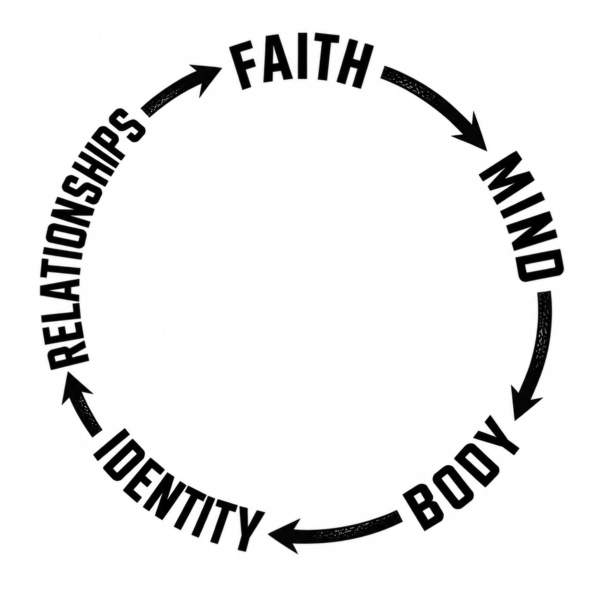

For men who never got the blueprint
BECOME THE MAN YOU NEEDED.
Your past matters. It shaped you. But it does not have to decide who you become next. Rebuild the five connected areas that shape how you live, lead, love, and show up.

I didn’t get the blueprint either.
I LEARNED HOW TO SURVIVE BEFORE I UNDERSTOOD HOW THOSE THINGS WERE SHAPING ME.
I grew up without the kind of healthy father figure that could show me what being a man was supposed to look like.
There was instability, loss, hurt, and a lot I learned to deal with by surviving instead of understanding.
You get good at pushing through. Being useful. Staying strong. Handling things yourself.
But eventually you realize survival skills aren’t always life skills.
I’ve had to learn how to rebuild my faith, my thinking, my health, my identity, and the way I show up for the people depending on me.
I’m not a therapist or some guy who has life completely figured out. I’m a working man, husband, father, volunteer firefighter, and someone still doing the work myself.
Unashamed Journey exists to share what I’m learning with men who never got the blueprint either.
Start where the work is
WHAT FEELS
OFF RIGHT NOW?
You do not have to begin with Faith because it says “01.” You do not have to fix every area at the same time. Start where you need it. Come back when another area needs attention.
God feels distant, faith feels like performance, or hurt and doubt have made relationship with Him difficult.
START WITH FAITHRead the full guide ↗02Old reactions, fear, anger, masks, or survival patterns keep making decisions for you.
START WITH MINDRead the full guide ↗03Your energy, health, training, sleep, or physical follow-through has slipped.
START WITH BODYRead the full guide ↗04Your worth feels tied to work, money, achievement, appearance, relationships, or approval.
START WITH IDENTITYRead the full guide ↗05The people you love need more of your presence, honesty, patience, repair, or attention.
START WITH RELATIONSHIPSRead the full guide ↗The five areas are connected, so working on one will often expose another. The goal is not to follow the circle perfectly. The goal is to recognize where the work is — and actually do something about it.
Understand the Rebuild Circle ↗The Rebuild Circle
FIVE AREAS.
ONE WHOLE LIFE.
The circle is connected, not sequential. These five areas shape one another, and the work in one often becomes visible somewhere else.
RELATIONSHIP, NOT PERFORMANCE.
Faith is the foundation — rebuilding a relationship with God underneath hurt, doubt, bad examples, and religious performance. It starts with honesty, not earning your way in.
Read Faith ↗02 / MINDSEE THE PATTERN BEFORE IT RUNS YOU.
Mind is learning to recognize the survival patterns, reactions, fears, masks, and assumptions that may have once protected you but now influence how you live.
Read Mind ↗03 / BODYBUILD CAPACITY.
Body is taking care of your health, strength, energy, mobility, and discipline so you can actually carry the responsibilities and relationships that matter to you.
Read Body ↗04 / IDENTITYKNOW WHO YOU ARE WITHOUT THE PERFORMANCE.
Identity is figuring out who you are when approval, achievement, work, relationships, and everything else you can lose are no longer allowed to determine your worth.
Read Identity ↗05 / RELATIONSHIPSWHERE THE WORK BECOMES VISIBLE.
Relationships are where rebuilding shows up — in the way you love, listen, lead, repair, stay present, and show up for the people closest to you.
Read Relationships ↗Faith gives you the foundation through relationship with God, not religious performance. Mind helps you understand what’s happening inside you. Body gives you the capacity to show up. Identity tells you who you are becoming. Relationships are where the work becomes visible.
The Method
THE CIRCLE TELLS YOU WHERE.
THE METHOD TELLS YOU HOW.
You do not rebuild by collecting more advice. You rebuild by facing what is real, owning what is yours, and changing what you can actually change.
Get honest about what is actually happening.
Separate what happened to you from what is now your responsibility.
Take the next practical action instead of staying stuck.
Free guides. Real starting points.
USE THE SITE.
DO THE WORK.
You do not need to buy something to start. The five cornerstone guides, the Rebuild Circle, and the Method are here to use and come back to.
Relationship with God beneath hurt, doubt, and performance.
02MindUnderstand the patterns that may still be protecting you from an old danger.
03BodyBuild the physical capacity to carry the life you are responsible for.
04IdentityBuild your worth deeper than anything you can lose.
05RelationshipsLet the people closest to you feel the work you are doing.
METHODFace It. Own It. Change It.A practical process for turning awareness into action.
A free next step
THE 7-DAY
RESET.
Seven days to stop surviving and start rebuilding.
The Reset is a free resource if you want more structure after exploring the site: one short lesson, one honest question, and one practical move each day.
Free resource
START THE RESET.
Enter your email and the first Reset email will arrive right away.
The mission
BUILD WHAT YOU NEVER RECEIVED.
Then become that man for somebody else.